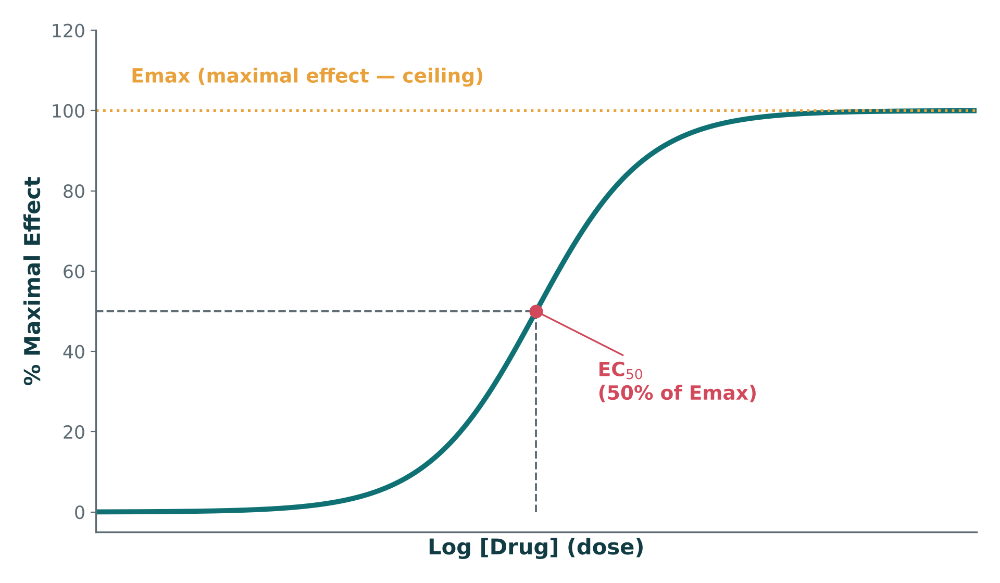
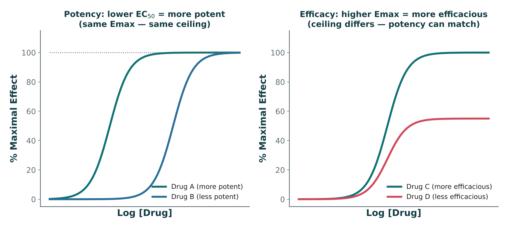
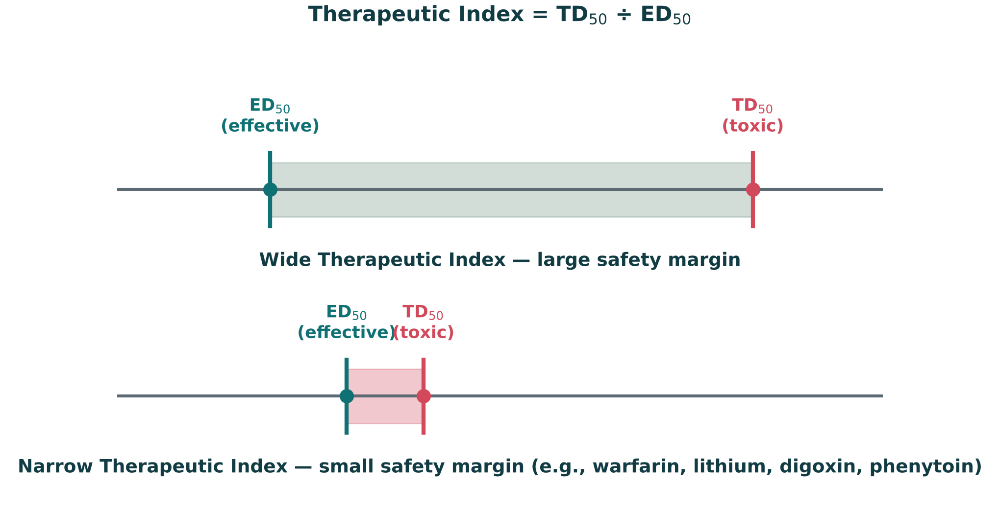
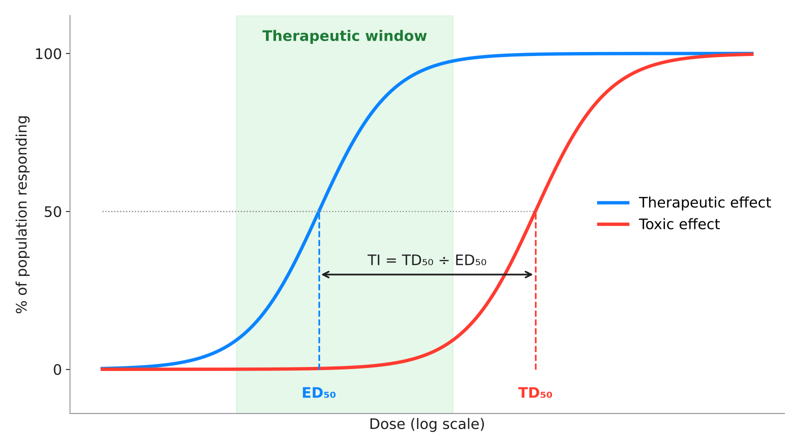
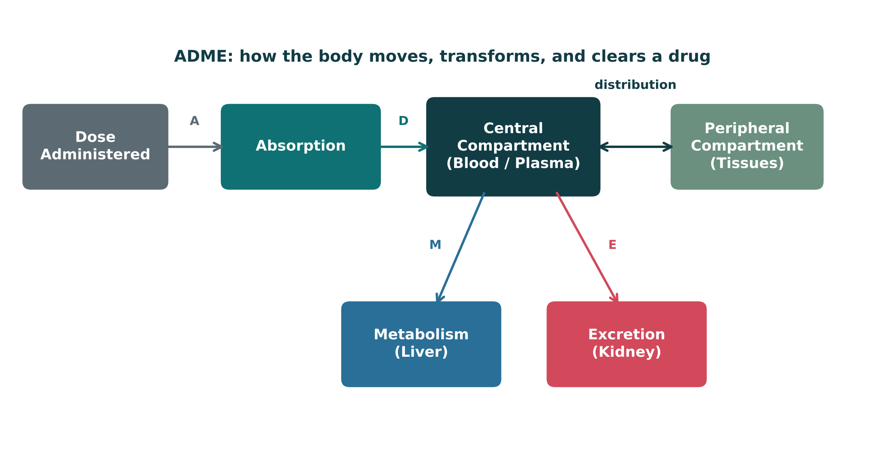

Open Sidekick (bottom right) to search, listen, drill flashcards, quiz, or chat about this lecture
The whole lecture in 6 sentences
Pharmacology studies how drugs interact with living systems: pharmacokinetics is what the body does to the drug (ADME), and pharmacodynamics is what the drug does to the body.S5; S6Part 1 →
Learn and prescribe by generic name — brand names can hide a shared ingredient and cause unintentional double-dosing.S7; S9Part 1 →
Drugs move from discovery through preclinical testing, Phase I–III trials, FDA review, and Phase IV postmarketing surveillance — where rare adverse effects are often first found.S12; S13; S12 (notes)Part 2 →
Drugs act on five target classes; a competitive antagonist shifts the dose-response curve right (same Emax), while a noncompetitive/irreversible antagonist lowers Emax.S20; S22 (notes)Part 3 →
Potency (EC₅₀) is the dose needed and efficacy (Emax) is the ceiling — efficacy matters more — and narrow-TI drugs (warfarin, lithium, digoxin, phenytoin) need careful dosing and blood levels.S30; S34; S38Part 4 →
Oral drugs face first-pass hepatic metabolism that lowers bioavailability (IV = 100%), and distribution depends on protein binding, lipid solubility, perfusion, and barriers like the BBB.S50; S51; S52; S53Part 5 →
Learning objectives
IO = syllabus unit objective · SO = this session's objectives slide.
ID
Objective
Covered in
IO1.1
Define and describe fundamental pharmacologic concepts, including pharmacokinetics, pharmacodynamics, drug-receptor interactions, dose-response relationships, therapeutic index, half-life, and steady state.
⚠ Half-life and steady state are taught in Session 2 (L02)
Explain how patient-specific factors, including age, pregnancy, renal and hepatic function, and pharmacogenetic variation, may affect medication response.
⚠ Barely covered this session; pharmacogenomics and renal dosing in Session 2 (L02)
Session 1 of 2 on Introduction to Pharmacology (Thursday, October 15): language, drug development, pharmacodynamics, dose-response, and ADME through distribution.S1; S2 (notes)
Session 2 (Thursday, October 22) continues with metabolism, excretion, PK calculations (half-life, steady state, clearance), pharmacogenomics, and the integrated clinical decision-making framework.S2; S56
ADME is only half-finished after Session 1 — the lecture stopped after Distribution; Metabolism and Excretion pick up first in Session 2.S56 (notes)
Required text: Katzung's Basic and Clinical Pharmacology, 16th Edition (Todd W. Vanderah · 2025 · McGraw-Hill Education · ISBN 1260463303 eBook) — Unit 1 reading: Chapters 1, 2, 3, 4, and 5. AccessMedicine: accessmedicine.mhmedical.com/book.aspx?bookid=3382S3
Recommended text: Pharmacotherapy Principles and Practice (Chisholm-Burns, Schwinghammer, Malone, Kolesar, Lee · 2022 · McGraw-Hill Education · Print ISBN 9781260460278 · eText ISBN 9781260460285) — use as supplemental support alongside Katzung's Chapters 1–5, not a substitute.S3; S3 (notes)
Original figures in this deck: the lecture's Figures 1–5 (agonist & antagonist effects; sigmoidal dose-response curve; potency vs. efficacy; wide vs. narrow therapeutic index; ADME compartment model) are original diagrams generated by the course director using the AI tool Claude (Anthropic, 2026, Claude Sonnet 5) to illustrate standard, non-copyrighted pharmacologic concepts — not reproduced from Katzung or any other copyrighted source. Reference: Anthropic. (2026). Claude (Sonnet 5) [Large language model].S57; S57 (notes)
Slide discrepancies
First-pass effect: slides describe hepatic first-pass and say essentially every route except oral bypasses it. The textbook adds that drug can also be metabolized in the gut wall, and that the rectal route only partly avoids the liver (about 50%).S49 (notes); S51; p. 48; p. 49
Therapeutic index: slides define TI = TD₅₀ ÷ ED₅₀. The textbook notes this is measured in animals; for a patient, the therapeutic window (minimum therapeutic to minimum toxic dose) is more useful.S38; p. 38
Phase I population: slides say healthy volunteers; the textbook adds that patients with the disease are used when significant toxicity is expected (cancer, AIDS).S13; p. 17
Phase II size: slides say a few hundred patients; the textbook says 100–200. Exams may use either — know both.S13; p. 17
1Part 1 · Topic
The Language of Pharmacology
SO1IO1.1IO1.4IO1.5
Key definitions
Pharmacology: the scientific study of how drugs interact with living systems — from the molecular level to the whole patient.S5
Drug (medication): any chemical substance used to diagnose, treat, cure, or prevent disease, or to alter a physiologic process.S5
Pharmacologic effect: a measurable biological change a drug produces (e.g., lower blood pressure).S5
Therapeutic effect: the intended, beneficial pharmacologic effect for a given condition.S5
Adverse drug reaction (ADR): an unintended and harmful response occurring at normal therapeutic doses.S5
Toxicity: harmful effects that occur as the dose or exposure exceeds the therapeutic range.S5
Chemical name: describes the exact molecular structure (rarely used in clinical practice).S7
Generic name: the official, non-proprietary name assigned to the active drug — one generic name per drug, regardless of manufacturer.S7
Brand (trade) name: the manufacturer's marketed name; the same generic drug may have several brand names, and brand names change between countries.S7
TBProdrug: an inactive precursor converted to the active drug in the body (usually by metabolism).p. 8
TBPoisons are drugs with almost exclusively harmful effects — but "the dose makes the poison" (Paracelsus): any substance can harm at the wrong dose.p. 3
How it works
Pharmacokinetics = what the body does to the drug — ADME.S6; SG U1-R1
Pharmacodynamics = what the drug does to the body — receptors & effect.S6; SG U1-R1
Pharmacogenomics = how genetic variation shapes individual drug response.S6
Clinical Pharmacology / Toxicology = applying PK/PD to real patients, and the study of poisoning.S6
This map covers the whole lecture: PK and PD are the two biggest buckets, and nearly everything else (toxicology, pharmacogenomics, therapeutics) sits on top of them.S6 (notes)
Drugs named as examples
Acetaminophen (generic) is sold as Tylenol and under many store brands.S7
Clinical
PA students should learn and prescribe by generic name — it is unambiguous, international, and avoids confusing a patient's multiple brand-name products for different drugs.S7; SG U1-R2
Different brand-name products (Tylenol, many combination cold/flu products) can share the same active generic ingredient.S9; SG U1-R2
Prescribing and counseling by generic name avoids hiding duplicate therapy — the reason PAs default to generic names.S9; SG U1-R2
If a patient says they take "Tylenol" and separately "acetaminophen," check for accidental double-dosing — this previews the acetaminophen toxicity discussion.S7 (notes)
Precise vocabulary (generic names, therapeutic vs. adverse effects) protects patients.S56
TBMore than half of prescriptions in the USA are for generic drugs.p. 18
Trap
"Therapeutic effect" and "pharmacologic effect" are not synonyms — a drug can have pharmacologic effects that are not therapeutic (that is often exactly what an adverse effect is).S5 (notes)
ADR vs. toxicity: an ADR happens at normal therapeutic doses; toxicity happens when dose or exposure exceeds the therapeutic range.S5
Generic names do NOT vary by manufacturer (one per drug); brand names DO vary — and change between countries.S7
Chemical vs. generic vs. brand name
Name type
What it is
How many per drug
How to tell apart / clinical use
Chemical
Exact molecular structure
Not covered in materials
Rarely used in clinical practice
Generic
Official, non-proprietary name of the active drug
One — regardless of manufacturer
Learn and prescribe by it — unambiguous, international
Brand (trade)
Manufacturer's marketed name
Several possible; change between countries
Can hide a shared generic ingredient (e.g., Tylenol = acetaminophen)
How to tell them apart. Sources: S7; S9
Pharmacologic effect vs. therapeutic effect vs. ADR vs. toxicity
Term
Intended?
Harmful?
Dose
Pharmacologic effect
Not necessarily
Not necessarily
Any measurable biological change
Therapeutic effect
Yes — intended, beneficial
No
For a given condition
Adverse drug reaction (ADR)
No — unintended
Yes
Normal therapeutic doses
Toxicity
No
Yes
Dose or exposure exceeds the therapeutic range
How to tell them apart. Sources: S5; S5 (notes)
Why it happens
Why prescribe by generic name? One drug has ONE generic name but can hide under SEVERAL brand names — so brand-name products can conceal duplicate therapy and cause double-dosing.S7; S9
Mnemonic (memory aid)
PharmacoKinetics = the body Keeps the drug moving (ADME). PharmacoDynamics = what the Drug Does to the body.S6
ADR = At normal Doses, Reaction is harmful. Toxicity = Too much (exceeds the therapeutic range).S5
High-yield
PK = what the body does to the drug (ADME); PD = what the drug does to the body (receptors & effect).S6; SG U1-R1
ADR = unintended, harmful, at normal therapeutic doses; toxicity = dose/exposure exceeds the therapeutic range.S5
Learn, prescribe, and counsel by generic name — brand names can hide a shared ingredient → double-dosing.S7; S9
Pharmacology connects a drug's chemistry to its clinical effect.S56
2Part 2 · Topic
Drug Development & Regulation
SO2IO1.4
Key definitions
Efficacy: how well a drug works under ideal, controlled trial conditions.S14
Effectiveness: how well a drug works in everyday clinical practice, with real-world adherence and comorbidities.S14
SGDrug interactions can also reduce real-world effectiveness below trial efficacy.SG U1-R4
Benefit vs. risk: the central question regulators and prescribers must weigh for every approval and every prescription.S14
Adverse-event reporting: ongoing, voluntary and mandatory reporting systems (e.g., FDA MedWatch) that catch safety signals after approval.S14
How it works
Where new drugs come from — Natural products: plants, fungi, microbes, marine organisms.S11
Synthetic & biotech: designed small molecules; recombinant proteins.S11
Biologics: monoclonal antibodies, gene- and cell-based therapies.S11
Drug repurposing: an existing approved drug found to treat a new condition.S11
From discovery to patient: Discovery → Preclinical testing → Clinical trials → FDA review → Approval → Postmarket surveillance.S12
Most candidate drugs fail somewhere along this pipeline — approval is the exception, not the rule.S12
Phase I: safety, tolerability, dose-finding — a small group of healthy volunteers.S13; SG U1-R3
Phase II: preliminary efficacy and side-effect profile — a few hundred patients with the target condition.S13; SG U1-R3
Phase III: confirm efficacy and monitor adverse effects at scale — hundreds to thousands of patients, often multi-site.S13; SG U1-R3
Phase IV: postmarketing surveillance after approval — the general prescribed population.S13; SG U1-R3
Every approved drug has passed through a structured development and regulatory pipeline (Phases I–IV).S56
TBPhase II has the highest failure rate — only about 25% of new drugs move on to Phase III.p. 17
TBPhase III usually enrolls thousands of patients (Figure 1–6: 1000–6000), often double-blind and crossover, in settings like the drug's eventual use.p. 12; p. 17
TBLess than one-third of drugs studied in humans survive clinical trials and reach the market.p. 14
TBTo see one case of a toxicity occurring 1 in 10,000, several hundred thousand patients may need exposure — so rare effects usually surface only in Phase IV, which has no fixed duration.p. 18
TBMarketing requires a New Drug Application (NDA) after Phase III; human testing starts only after an IND (Investigational New Drug) application.p. 12; p. 17
Drugs named as examples
FDA MedWatch — an adverse-event reporting system.S14
Biologic DMARDs (MSK unit, later) are a direct example of the "biotechnology" drug source.S11 (notes)
TBThalidomide (sold in Europe as a "nontoxic" hypnotic) caused about 10,000 birth defects and led to the Kefauver-Harris Amendments (1962), which required proof of efficacy as well as safety.p. 16
TBThe Orphan Drug Amendment (1983) gives incentives for drugs treating diseases with fewer than 200,000 US patients.p. 16
Clinical
Postmarketing surveillance (Phase IV) is where rare adverse effects are often first detected — trial populations are too small and too short in duration to catch 1-in-10,000 events.S12 (notes)
Case: a new medication improves symptoms in 70% of patients with a chronic, non-life-threatening condition, but postmarketing data show serious hepatotoxicity in about 1%. Would you prescribe it — and does your answer depend on what else is available?S15
Clinical pearl: risk-benefit analysis is always comparative — a 1% serious-toxicity rate reads very differently if it is the only effective option versus if three safer alternatives already exist.S15
Ask "compared to what?" rather than judging the number in isolation.S15 (notes)
TBA patent lasts 20 years; after it expires, generics are approved through an abbreviated new drug application (ANDA) that requires bioequivalence data.p. 16; p. 18
TBPlacebo responses can occur in as many as 30–40% of subjects — the reason controlled, blinded trials are needed.p. 14
TBAdverse events that are both serious and unexpected must be reported to the FDA within 15 days; clinicians can report through MedWatch.p. 18; p. 19
Trap
Efficacy vs. effectiveness is a favorite exam distinction: efficacy is the trial result; effectiveness is what happens once real patients with real adherence patterns use the drug.S14 (notes)
Phase III — not Phase I, II, or IV — is the large pre-approval trial that confirms efficacy and monitors safety at scale.S17
Phase III is what most people picture as "the" clinical trial, but regulatory decisions already begin shaping the drug long before that.S13 (notes)
Confirm efficacy and monitor adverse effects at scale
Hundreds to thousands, often multi-site
Largest pre-approval trial
Phase IV
Postmarketing surveillance after approval
The general prescribed population
After approval; catches rare effects
How to tell them apart. Sources: S13; S12 (notes)
Efficacy vs. effectiveness
Efficacy
Effectiveness
Setting
Ideal, controlled trial conditions
Everyday clinical practice
What changes it
Not covered in materials
Real-world adherence, comorbidities (and drug interactions — SG)
Shorthand
The trial result
What happens with real patients
How to tell them apart. Sources: S14; S14 (notes); SG U1-R4
Slide discrepancy
Phase I population
Slides: Phase I: a small group of healthy volunteers.S13
Textbook: Phase I: 20–100 healthy volunteers — but if significant toxicity is expected (cancer, AIDS therapy), volunteer patients with the disease are used instead.p. 17
Slide discrepancy
Phase II size
Slides: Phase II: a few hundred patients with the target condition.S13
Textbook: Phase II: a modest number of patients (100–200) with the target disease.p. 17
Why it happens
Why are rare adverse effects found after approval? Trials are too small and too short to catch 1-in-10,000 events — so they show up in Phase IV, in the general prescribed population.S12 (notes); S13
Mnemonic (memory aid)
Phases by question: I = Is it safe (healthy volunteers)? II = Is there an effect? III = Is it confirmed at scale? IV = Is it still safe in everyone?S13
This single chain underlies agonism, antagonism, potency, and efficacy — all describe different features of this interaction.S21
Five major drug target classes: receptors, ion channels, enzymes, transporters, nucleic acids.S20; SG U1-R5
Receptors: G-protein-coupled, ligand-gated ion channel, enzyme-linked, nuclear.S20
Ion channels: directly gate the flow of ions across a membrane.S20
Enzymes: drugs can inhibit or, less commonly, activate an enzyme's activity.S20
Transporters & nucleic acids: carrier proteins; or DNA/RNA for some antimicrobials & gene therapies.S20
Most drugs target receptors or enzymes — ion channels and transporters matter especially for cardiac and CNS drugs.S20 (notes)
An inverse agonist actively reduces constitutive (baseline) receptor activity below normal; a true antagonist merely blocks the agonist without lowering baseline activity itself.S28
TBSpare receptors: a maximal response can occur without occupying every receptor (e.g., about 90% of cardiac β receptors can be blocked and maximal inotropic response still preserved).p. 23
TBIrreversible antagonist effects last until new receptors are made — duration depends on receptor turnover, not drug elimination (phenoxybenzamine for pheochromocytoma).p. 25
TBA partial agonist's lower maximal effect is not due to lower affinity — it can occupy all receptors and still produce less response.p. 26
TBAllosteric modulators bind a different site from the agonist (e.g., benzodiazepines enhance GABA's effect).p. 25
TBAgonist-induced desensitization (tachyphylaxis) and downregulation reduce response with continued exposure.p. 39
Drugs named as examples
Albuterol — selective β2-adrenergic agonist (example of agonism).S26
TBChemical antagonism needs no receptor: positively charged protamine binds and neutralizes negatively charged heparin.p. 26
TBPhysiologic antagonism: two drugs act on different receptors with opposing effects (e.g., insulin opposes glucocorticoid-induced hyperglycemia).p. 27
Clinical
Albuterol is a selective β2-adrenergic receptor agonist.S26
Binding activates the β2 receptor → increases intracellular cAMP.S26
This is the same receptor-to-response logic you will reuse for every agonist drug this term.S26
Albuterol bridges introductory pharmacodynamics into the pulmonary pharmacology seen later in the curriculum.S26 (notes)
TBCompetitive antagonism is surmountable in real life: exercise or stress raises catecholamines enough to overcome a fixed propranolol dose.p. 25
TBPropranolol markedly slows the heart rate in pheochromocytoma (high catecholamines) but not the resting rate of a trained marathon runner.p. 39
Trap
Classic exam trap: a competitive antagonist shifts the dose-response curve right (same Emax, more drug needed); a noncompetitive/irreversible antagonist lowers the Emax instead.S22 (notes)
A rightward shift with an unchanged plateau is the graphical signature of competitive antagonism — potency falls, but because the antagonism is surmountable, enough agonist can still reach the original Emax.S25
Inverse agonist ≠ antagonist: only the inverse agonist lowers baseline activity below normal, without any agonist present.S27-28
SGStudy-guide distractor: "has no effect on receptor activity whatsoever" matches none of the agonist/antagonist types.SG U1-M
Antagonist reversibly occupies the agonist's site→More agonist needed for same effect→Curve shifts right→Same Emax still reachable (surmountable)
Figure 1 · Agonist & antagonist effects. Original illustrative curves (not Katzung data): a competitive antagonist shifts the curve right with the same Emax; a noncompetitive/irreversible antagonist lowers Emax instead. Read left to right: agonist alone → competitive (shifted right, same ceiling) → noncompetitive (lower ceiling).S23; S23 (notes)
Agonists vs. antagonists
Type
What it does at the receptor
Dose-response curve
How to tell apart
Full agonist
Maximal receptor activation
Not covered in materials
Reaches maximal activation
Partial agonist
Submaximal activation
Not covered in materials
Submaximal even at full occupancy
Inverse agonist
Reduces baseline (constitutive) activity
Not covered in materials
Lowers activity below normal with no agonist present
Competitive antagonist
Reversibly competes at the same site
Shifts right, same Emax
Overcome by more agonist (surmountable)
Noncompetitive antagonist
Binds elsewhere or irreversibly
Lowers Emax
Plateaus lower instead of shifting right
Irreversible antagonist
Permanently inactivates the receptor
Lowers Emax
Lasts until new receptor is synthesized
How to tell them apart. Sources: S22; S22 (notes); S25; S27-28
The five major drug target classes
Target
What it is / does
Note
Receptors
G-protein-coupled, ligand-gated ion channel, enzyme-linked, nuclear
Most common target (with enzymes)
Ion channels
Directly gate the flow of ions across a membrane
Especially cardiac and CNS drugs
Enzymes
Drugs inhibit or, less commonly, activate them
Most common target (with receptors)
Transporters
Carrier proteins
Especially cardiac and CNS drugs
Nucleic acids
DNA/RNA
Some antimicrobials & gene therapies
How to tell them apart. Sources: S20; S20 (notes)
Why it happens
Why can more agonist overcome a competitive antagonist? Both compete reversibly for the same site — flood the site with agonist and it wins, so the curve shifts right but the same Emax is still reached.S22; S25
Why does albuterol open the airways? β2 activation → ↑ intracellular cAMP → bronchial smooth muscle relaxes → bronchodilation.S26
Mnemonic (memory aid)
Competitive = Can be outcompeted (shift right). Noncompetitive = No full ceiling (lower Emax).S22 (notes)
High-yield
Drug → target → signal transduction → response.S19 (notes)
Five target classes: receptors, ion channels, enzymes, transporters, nucleic acids.S20; SG U1-R5
Inverse agonist lowers baseline activity below normal; an antagonist only blocks.S28
Pharmacodynamics explains how drugs bind receptors to produce agonism or antagonism.S56
4Part 4 · Topic
Dose-Response Relationships
SO4IO1.1
Key definitions
Potency: how much drug is required to produce a given effect — a more potent drug needs a lower dose.S30; SG U1-R6
Efficacy (Emax): the maximum effect a drug can produce, no matter how high the dose goes.S30; SG U1-R6
EC₅₀: the drug concentration producing 50% of the maximal effect — the standard measure of potency.S30
Therapeutic Index (TI) = TD₅₀ ÷ ED₅₀ (toxic dose in 50% ÷ effective dose in 50%).S38; SG U1-R7
TBQuantal dose-response: ED₅₀ (effective in 50%), TD₅₀ (toxic in 50%), LD₅₀ (lethal in 50% of animals).p. 38
TBTherapeutic window: the range between the minimum therapeutic dose and the minimum toxic dose — more practical than TI for dosing a patient.p. 38
How it works
The sigmoidal dose-response curve: x-axis = log(dose), y-axis = effect. EC₅₀ is on the x-axis; Emax is the plateau — the ceiling effect.S30 (notes); S31
EC₅₀ is read off the curve at the halfway point between baseline and Emax.S33
Lower EC₅₀ = more potent. Higher Emax = more efficacious.S34
Potency and efficacy are independent properties — a drug can differ in one without differing in the other.S35
A curve farther left reaches the same effect at a lower dose (greater potency); curves reaching the same plateau height have identical Emax (efficacy).S37
A wide TI means a large margin between an effective dose and a toxic dose — generally safer to dose.S38
A narrow TI means effective and toxic doses are close together — requires careful dosing and often blood-level monitoring.S38; SG U1-R7
The distance between the ED₅₀ and TD₅₀ markers is the therapeutic index itself.S41
Dose-response curves describe potency and efficacy.S56
Potency clinically matters for dosing — not for choosing the "better" drug.S34
Efficacy clinically matters much more than potency — a highly potent drug with low efficacy may be clinically useless.S34
With a narrow TI, a small dosing error can move a patient from effective to toxic — which is why these drugs require blood-level monitoring.S41; S39 (notes)
Students should be able to name all four narrow-TI drugs without hesitation and know that each requires therapeutic drug monitoring.S38 (notes)
TBNo drug causes only a single specific effect — drugs are selective, not specific.p. 40
TBAsthma + hypertension on propranolol: nonselective β blockade can cause bronchoconstriction; a β₁-selective blocker (metoprolol) is an alternative.p. 41
Trap
A drug can be very potent (tiny dose) but have low efficacy — potency alone never tells you whether a drug "works better."S34 (notes)
Same Emax + lower dose needed = MORE POTENT, EQUALLY efficacious — not "more efficacious."S43; SG U1-R6
EC₅₀ measures potency — not toxicity and not bioavailability.S33
A narrow-TI drug is not "safer because it needs a lower dose" — it has a smaller margin and needs closer monitoring.S40-41
Step by step
TBAsthma + propranolol (textbook case)p. 41
Nonselective β blocker (propranolol)→Blocks β2 in the airways→Bronchoconstriction / no bronchodilation→Use a β1-selective blocker (metoprolol) or another antihypertensive

Figure 2 · The sigmoidal dose-response curve. Original illustrative curve (illustrative values, not from any textbook): EC₅₀ marks 50% of Emax; Emax is the plateau — the ceiling effect.S31; S31 (notes)

Figure 3 · Potency vs. efficacy, side by side. Left panel: two drugs with the same Emax but different EC₅₀ (potency differs). Right panel: two drugs with the same EC₅₀ but different Emax (efficacy differs). Potency and efficacy are independent properties.S35; S35 (notes)

Figure 4 · Wide vs. narrow therapeutic index. Original illustrative number-line comparison: a wide gap between ED₅₀ and TD₅₀ is safer to dose than a narrow one (illustrative values). Note how close ED₅₀ and TD₅₀ sit for the narrow-TI example (e.g., warfarin, lithium, digoxin, phenytoin).S39; S39 (notes)

TBTextbook concept · Quantal dose-response and the therapeutic window. Original diagram (illustrative values) of a textbook concept: the % of a population showing the therapeutic effect (blue) or a toxic effect (red) as dose rises. ED₅₀ and TD₅₀ give TI = TD₅₀ ÷ ED₅₀ (an animal-study measure); the therapeutic window — minimum therapeutic dose to minimum toxic dose — is the more practical range for dosing a patient.p. 38
Potency vs. efficacy
Potency
Efficacy (Emax)
Definition
How much drug is needed to get an effect
The maximum effect the drug can produce
Measured by
EC₅₀ — lower EC₅₀ = more potent
Plateau height — higher Emax = more efficacious
On the curve
Curve farther left
Curve plateaus higher
Clinical weight
Matters for dosing, not for picking the "better" drug
Matters much more — potent + low efficacy may be useless
How to tell them apart. Sources: S30; S34; S37
Wide vs. narrow therapeutic index
Wide TI
Narrow TI
ED₅₀ vs. TD₅₀
Far apart — large safety margin
Close together — small safety margin
Dosing
Generally safer to dose
Careful dosing; small errors → toxic
Monitoring
Not covered in materials
Often blood-level monitoring
Examples
Not covered in materials
Warfarin, lithium, digoxin, phenytoin
How to tell them apart. Sources: S38; S39; S41
The narrow-TI drugs in numbers (textbook Table 3–1)
Drug
Half-life
Target level
Toxic above
Worth knowing
Digoxin
39 h
1 ng/mL
2 ng/mL
Vd ~500 L (sequestered in tissue); 67% excreted in urine
Lithium
22 h
0.7 mEq/L
2 mEq/L
95% excreted in urine, 0% protein-bound — renal function rules
Why do narrow-TI drugs need blood levels? The effective dose and the toxic dose sit so close together that a small dosing error can push the patient from effective to toxic.S38; S41
Why does efficacy beat potency clinically? Potency only changes the dose you give; efficacy sets the ceiling of what the drug can achieve at any dose.S30; S34
Pharmacokinetics: ADME — Absorption & Distribution
SO5IO1.2IO1.3IO1.5
Key definitions
A — Absorption: movement of drug from the site of administration into the bloodstream.S45
D — Distribution: movement of drug from blood into tissues.S45
M — Metabolism: chemical transformation of drug, mainly in the liver.S45
E — Excretion: removal of drug/metabolites from the body, mainly via the kidney.S45
Bioavailability (F) = the fraction of an administered dose that reaches systemic circulation unchanged.S50; SG U1-R8
First-pass effect: the liver metabolizes (can inactivate a large fraction of) an orally absorbed drug before it reaches systemic circulation.S51; S51 (notes); SG U1-R9
Volume of distribution (Vd): a calculated value relating total drug in the body to plasma concentration — a high Vd suggests extensive tissue distribution.S52
How it works
ADME is the organizing skeleton for the rest of the lecture — each remaining pharmacokinetics section is one ADME letter in depth.S45 (notes)
ADME determines how much drug reaches its target and for how long.S56
Metabolism (M arrow → liver) and Excretion (E arrow → kidney) are the back half of ADME — how the body gets rid of the drug; Absorption and Distribution govern how the drug arrives and spreads.S46; S48
First-pass route: oral drug → GI tract → portal circulation → liver → systemic circulation.S51
By definition, an IV dose has 100% bioavailability — the entire dose enters the bloodstream directly (no absorption step).S50; SG U1-R8
Oral bioavailability is reduced by incomplete absorption and by first-pass hepatic metabolism.S50
Plasma protein binding: only unbound ("free") drug is pharmacologically active and able to cross membranes.S52
Lipid solubility: lipophilic drugs cross membranes more readily and distribute into fatty tissue.S52
Tissue perfusion: highly perfused organs (brain, heart, kidney) receive drug faster than poorly perfused tissue (fat, bone).S52
Vd is a theoretical volume, not a real anatomic space.S52 (notes)
Blood-brain barrier — Why can some drugs readily enter the CNS while others cannot? Tight junctions between endothelial cells restrict paracellular movement.S53
Small, lipophilic, non-ionized drugs cross the BBB more easily than large, polar, or highly protein-bound drugs.S53
Efflux transporters (like P-glycoprotein) can actively pump some drugs back out of the CNS.S53
TBFirst-pass loss can happen in the gut wall (e.g., intestinal CYP3A4) as well as the liver; grapefruit juice inhibits gut-wall metabolism and P-glycoprotein, raising absorption of some drugs.p. 48
TBP-glycoprotein (MDR1) pumps drugs out of cells in brain, testes, and gut; inhibiting it raises digoxin blood levels.p. 9
TBIon trapping: weak acids are excreted faster in alkaline urine; weak bases faster in acidic urine.p. 10; p. 11
Drugs named as examples
Large first-pass effect: nitroglycerin, propranolol, morphine — all require higher oral doses (or a non-oral route) to achieve the same systemic exposure as IV.S51; SG U1-R9
Very high Vd: digoxin — mostly sequestered in tissue, not floating around in plasma.S52 (notes)
Subcutaneous route is common for insulin and heparin.S49
P-glycoprotein — an efflux transporter at the BBB.S53
Clinical
Routes that bypass first-pass metabolism: essentially everything except oral — IV, sublingual, inhaled, transdermal, topical, SC, IM.S49 (notes)
Sublingual absorption enters systemic venous circulation directly, bypassing the portal vein and the liver's first-pass metabolism; oral dosing passes through the liver first.S55; SG U1-R9
Because the liver can inactivate a large fraction of drug first, some drugs are given sublingually or transdermally instead of orally.S51 (notes)
A highly polar antibiotic would generally not cross the BBB well — unless the meninges are inflamed, as in meningitis.S53 (notes)
TBAspirin overdose: sodium bicarbonate alkalinizes blood and urine, reducing aspirin entry into tissues and speeding its renal excretion.p. 20
Trap
IV = 100% bioavailable with no absorption phase; oral is less than 100%.S49; S50
Taking an oral drug with food or on an empty stomach does not bypass first-pass metabolism — sublingual does.S54-55
A very high Vd does not mean a big anatomic space — it means the drug is mostly in tissue, not plasma.S52 (notes)
Only free (unbound) drug is active and can cross membranes — protein-bound drug cannot.S52
TBAspirin overdose and urine pH (textbook case)p. 20
Aspirin = weak acid→Acidosis drives it into tissues and back from urine→Sodium bicarbonate alkalinizes blood and urine→Drug ionized → trapped in urine → faster renal clearance

Figure 5 · The ADME compartment model. Original illustrative compartment diagram: how a dose moves from administration through distribution, metabolism, and excretion. Dose → Absorption → Central compartment (blood/plasma) ⇄ Peripheral compartment (tissues); M arrow → Metabolism (liver), E arrow → Excretion (kidney).S46; S46 (notes)
Routes of administration
Route
Key feature
Bypasses first-pass?
Oral (PO)
Convenient; subject to first-pass metabolism and variable absorption
No
Sublingual
Absorbed directly into systemic circulation
Yes
Intravenous (IV)
100% bioavailable; immediate onset; no absorption phase
Yes
Intramuscular (IM)
Faster than oral; good for depot/long-acting formulations
Yes
Subcutaneous (SC)
Slower, steady absorption; common for insulin, heparin
Yes
Inhaled
Rapid local effect in the lungs; minimizes systemic exposure for some drugs
Yes
Transdermal
Slow, sustained systemic absorption through the skin
Yes
Topical
Local effect at the site of application; minimal systemic absorption
Yes
How to tell them apart. Sources: S49; S49 (notes)
Who crosses the blood-brain barrier?
Crosses more easily
Crosses less easily
Size
Small
Large
Chemistry
Lipophilic, non-ionized
Polar
Protein binding
Not covered in materials
Highly protein-bound
Other
Not covered in materials
Pumped out by efflux transporters (P-glycoprotein)
How to tell them apart. Sources: S53
Bioavailability by route (textbook Table 3–3)
Route
Bioavailability (%)
Note
Intravenous (IV)
100
Most rapid onset
Intramuscular (IM)
75 to ≤100
Large volumes often feasible; may be painful
Subcutaneous (SC)
75 to ≤100
Smaller volumes than IM; may be painful
Oral (PO)
5 to <100
Most convenient; first-pass effect may be important
Rectal (PR)
30 to <100
Less first-pass effect than oral
Inhalation
5 to <100
Often very rapid onset
Transdermal
80 to ≤100
Usually very slow absorption; prolonged duration
TBHow to tell them apart. Sources: p. 48
Why it happens
Why is IV bioavailability 100%? The whole dose enters the bloodstream directly — there is no absorption step and no trip through the liver first.S50; S49
Why does sublingual skip first-pass? It drains into systemic veins, not the portal vein — so the drug reaches the body before the liver can inactivate it.S55; S51
Why do highly protein-bound drugs act less and cross the BBB poorly? Only free (unbound) drug is active and able to cross membranes.S52; S53
Mnemonic (memory aid)
Big first-pass drugs "Need Plenty More by mouth": Nitroglycerin, Propranolol, Morphine.S51
High-yield
F = fraction of dose reaching systemic circulation unchanged; IV = 100%.S50
First-pass: oral → GI → portal → liver → systemic; big examples nitroglycerin, propranolol, morphine.S51
Every route except oral bypasses first-pass (sublingual = direct to systemic veins).S49 (notes); S55
Only free (unbound) drug is active; high Vd = drug mostly in tissue (e.g., digoxin).S52; S52 (notes)
BBB: small, lipophilic, non-ionized drugs cross; P-glycoprotein pumps some back out.S53
Cram sheet
Every term, mechanism, drug, and number. Hide the answers and quiz yourself; tap a blurred answer to peek.
Prompt
Answer
Pharmacology
Study of how drugs interact with living systems — molecule to whole patientS5
Drug (medication)
Chemical used to diagnose, treat, cure, prevent disease, or alter a physiologic processS5
Pharmacologic vs. therapeutic effect
Any measurable biological change vs. the intended, beneficial effectS5
Adverse drug reaction (ADR)
Unintended, harmful response at normal therapeutic dosesS5
Toxicity
Harm when dose/exposure exceeds the therapeutic rangeS5
Chemical / generic / brand name
Exact structure (rarely used) / official non-proprietary, one per drug / manufacturer's, many, vary by countryS7
First, the lecture's own 10 knowledge checks — exactly as written. Then original PANCE-style questions. Tap an answer to reveal the explanation.
From the lecture
Lecture check 1 · S8-9
A patient says they take no medications, but separately mentions using "Tylenol" for headaches and a combination cold-and-flu product. What does this scenario illustrate?
Answer: A
Different brand-name products (Tylenol, many combination cold/flu products) can share the same active generic ingredient. Prescribing and counseling by generic name avoids hiding duplicate therapy — the reason PAs default to generic names.S8-9
In which clinical trial phase is a drug first tested in a large patient population specifically to confirm efficacy and monitor for adverse effects at scale, just before approval?
Answer: C
Phase III trials enroll hundreds to thousands of patients, often at multiple sites, to confirm efficacy and monitor safety at scale before approval. Phase I is small-scale safety/dosing, Phase II is preliminary efficacy, and Phase IV is postmarketing surveillance after approval.S16-17
In Figure 1 above, the dashed curve (+ Competitive antagonist) is shifted to the right of the agonist-alone curve but reaches the same plateau at the top. What does this pattern show?
Answer: A
A rightward shift with an unchanged plateau is the graphical signature of competitive antagonism: it takes more drug to reach a given effect (potency falls), but because the antagonism is surmountable, enough agonist can still reach the original Emax. Contrast this with the noncompetitive/irreversible curve in the same figure, which plateaus lower instead of shifting right.S24-25
A drug binds the same receptor as an endogenous agonist and lowers the tissue’s baseline (constitutive) activity below normal, without any agonist present. This drug is best classified as a(n):
Answer: D
An inverse agonist actively reduces constitutive (baseline) receptor activity below normal — a true antagonist merely blocks the agonist without lowering baseline activity itself.S27-28
On the dose-response curve in Figure 2, the point marked EC₅₀ sits exactly halfway up the rising part of the curve. What does this point represent?
Answer: B
EC₅₀ is read directly off the curve at the halfway point between baseline and Emax (the plateau) — it is the standard graphical measure of potency, not a measure of toxicity or bioavailability.S32-33
In the left panel of Figure 3, Drug A’s curve sits to the left of Drug B’s curve, but both curves plateau at the same height. What does this tell you?
Answer: A
A curve positioned farther left reaches the same effect at a lower dose — that is greater potency. Because both curves reach the same plateau height, their Emax (efficacy) is identical; only potency differs, exactly as the right panel then shows the reverse case (same potency, different efficacy).S36-37
Comparing the two number lines in Figure 4, the narrow-TI drug’s ED₅₀ and TD₅₀ markers sit much closer together than the wide-TI drug’s. What is the clinical implication?
Answer: B
The distance between the ED₅₀ and TD₅₀ markers on the number line is the therapeutic index itself — a narrow gap (as with warfarin, lithium, digoxin, phenytoin) means a small dosing error can move a patient from effective to toxic, which is why these drugs require blood-level monitoring.S40-41
Drug X requires a much lower dose than Drug Y to achieve the same effect, but both drugs achieve the same maximum effect (Emax). Which statement is correct?
Answer: B
Needing a lower dose for the same effect is the definition of greater potency. Since both drugs reach the same Emax, their efficacy is equal — potency and efficacy are independent properties.S42-43
In Figure 5, two separate arrows leave the Central Compartment box: one labeled "M" pointing to Metabolism (Liver), and one labeled "E" pointing to Excretion (Kidney). Together, these two arrows represent which part of ADME?
Answer: C
The diagram shows drug leaving the Central Compartment by two separate routes: the "M" arrow to the liver (biotransformation) and the "E" arrow to the kidney (elimination). Together these are the back half of ADME — how the body gets rid of the drug, as opposed to Absorption and Distribution, which govern how the drug arrives and spreads.S47-48
Which route of administration bypasses first-pass hepatic metabolism entirely, by entering systemic venous circulation directly?
Answer: A
Sublingual absorption enters systemic venous circulation directly, bypassing the portal vein and the liver’s first-pass metabolism — unlike oral dosing, which is absorbed into the portal circulation and passes through the liver first.S54-55
Q1 · Clinical vignette · The Language of Pharmacology
A 45-year-old patient takes a new medication exactly as prescribed. Drug levels are within the therapeutic range, yet the patient develops an unintended, harmful response. Which term best describes this event?
Answer: C
An ADR is an unintended and harmful response occurring at normal therapeutic doses (S5).S5
A. Toxicity is harm that occurs as dose or exposure exceeds the therapeutic range (S5); here levels were within range.
B. A therapeutic effect is the intended, beneficial effect (S5); this response was unintended and harmful.
D. Every ADR is a pharmacologic effect, but 'unintended and harmful at normal doses' is the more specific, best answer (S5).
E. Irreversible antagonism describes receptor inactivation until new receptor is synthesized (S22) — not a type of adverse event.
Q3 · Clinical vignette · Drug Development & Regulation
A drug relieved symptoms in most participants of a controlled multi-site trial. In your clinic, far fewer patients improve; many miss doses and have several comorbidities. Which concept best explains the gap?
Answer: B
Efficacy is performance under ideal trial conditions; effectiveness is performance in everyday practice with real-world adherence and comorbidities (S14).S14; S14 (notes)
A. TI describes the gap between effective and toxic doses (S38), not missed doses or comorbidities.
C. Potency is the dose needed for an effect and matters for dosing, not for whether patients improve (S34).
D. First-pass effect lowers oral bioavailability (S50-51); it doesn't explain adherence- and comorbidity-driven differences.
E. Competitive antagonism is a drug competing at the same receptor site (S22), not a disease effect.
Q4 · Clinical vignette · Drug Development & Regulation
Two years after approval, reports reveal a serious reaction occurring in about 1 in 10,000 patients — never seen in the clinical trials. Which best explains why it was missed before approval?
Answer: C
Rare adverse effects are often first detected in Phase IV because trial populations are too small and too short in duration to catch 1-in-10,000 events (S12 notes).S12 (notes); S13; S14
A. Reporting systems are both voluntary and mandatory (S14).
B. Approved drugs pass through a structured pipeline with clinical trials before FDA review (S12, S56).
D. Phase I uses a small group of healthy volunteers (S13).
E. Phase III confirms efficacy AND monitors adverse effects at scale (S13).
A patient receives a drug that blocks a receptor. Raising the dose of the agonist medication eventually restores the full original maximal response. The blocking drug is most likely a(n):
Answer: B
A competitive antagonist reversibly competes at the same site and is overcome by more agonist — same Emax, curve shifted right (S22, S22 notes).S22; S22 (notes)
A. Noncompetitive antagonists reduce the maximal effect, so full Emax is not restored (S22).
C. An inverse agonist lowers baseline activity; the scenario describes surmountable blockade (S22, S28).
D. Irreversible antagonists permanently inactivate receptors until new ones are synthesized, lowering Emax (S22, S22 notes).
E. A partial agonist itself gives submaximal activation (S22); it is not described as a blocker overcome by more agonist.
A 54-year-old is given phenoxybenzamine before surgery for pheochromocytoma. Blood pressure stays controlled even when the tumor releases large catecholamine surges. What best explains why the blockade persists?
Answer: E
An irreversible antagonist's duration depends on receptor turnover, and high agonist levels cannot overcome it (p. 25).p. 25-27
A. That is physiologic antagonism, like insulin vs glucocorticoids (p. 27).
B. Partial agonists produce a submaximal response; phenoxybenzamine is an irreversible antagonist (p. 25; p. 26).
C. That is chemical antagonism, like protamine–heparin (p. 26).
D. That describes competitive antagonism, which surges CAN overcome (p. 25).
A PA is starting a patient on lithium. Compared with a drug that has a wide therapeutic index, what does lithium's narrow therapeutic index mean for this patient's care?
Answer: C
A narrow TI means effective and toxic doses are close together — requiring careful dosing and often blood-level monitoring; lithium is a classic narrow-TI drug (S38).S38; S38 (notes)
A. Potency matters for dosing amount, not safety margin; narrow-TI drugs need monitoring (S34, S38).
B. That describes a WIDE TI (S38).
D. TI is about toxic vs. effective doses, not Emax (S30, S38).
E. Bioavailability is a different concept (S50); narrow-TI drugs need monitoring (S38).
Two drugs relieve the same symptom. Drug A works at 5 mg and Drug B at 50 mg, but at maximal doses Drug B produces a much greater maximal effect. Which statement best guides drug selection?
Answer: D
Efficacy (Emax) clinically matters much more than potency — a highly potent drug with low efficacy may be clinically useless (S34).S30; S34; S34 (notes)
A. Higher Emax = more efficacious, not more potent (S34).
B. Drug B reaches a higher maximal effect, so its efficacy is greater (S30).
C. A smaller dose means greater POTENCY; efficacy is the maximum effect (S30).
E. Potency alone never tells you whether a drug works better (S34 notes).
A patient stable on IV propranolol is switched to the oral form and needs a much higher oral dose to reach the same systemic exposure. Which best explains this?
Answer: E
Propranolol has a large first-pass effect; oral doses pass GI → portal → liver before systemic circulation, so higher oral doses are needed to match IV exposure (S51, S50).S50; S51
A. BBB crossing relates to CNS entry (S53), not systemic exposure after an oral dose.
B. Narrow TI calls for careful dosing and monitoring (S38); propranolol is named for first-pass, not narrow TI (S51).
C. IV has 100% bioavailability by definition (S50).
D. Protein binding affects free drug in plasma regardless of route (S52); the IV-to-oral gap is the first-pass effect (S51).